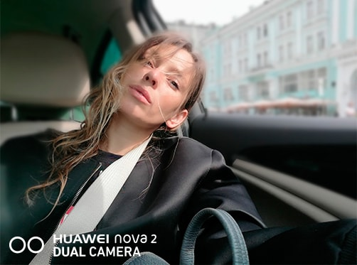
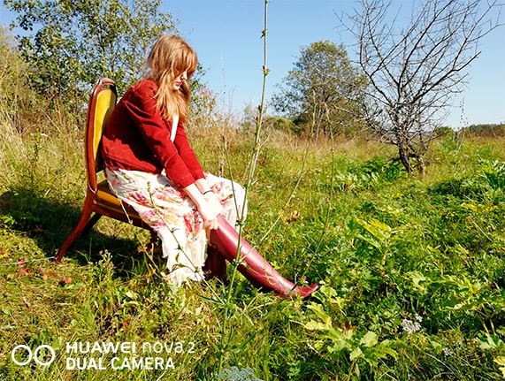
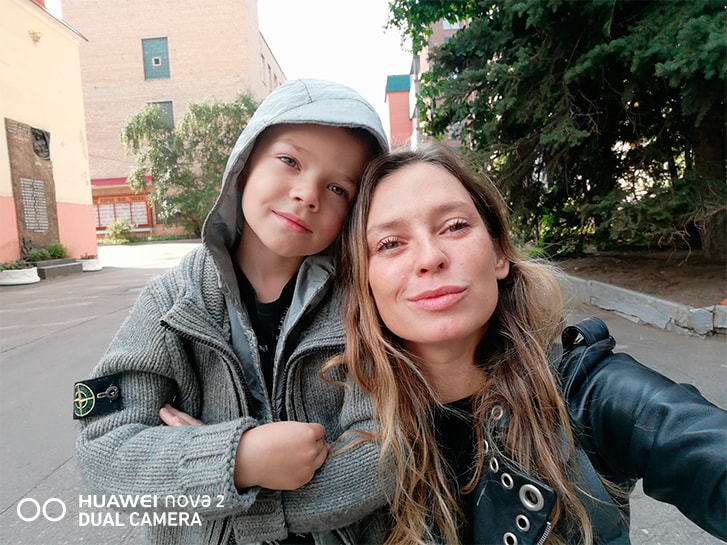
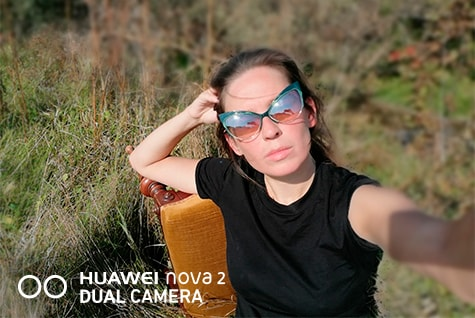
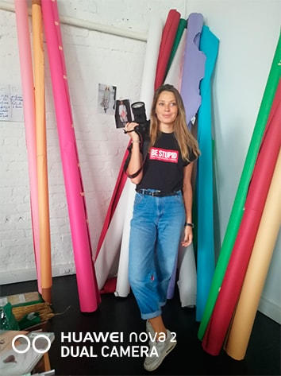
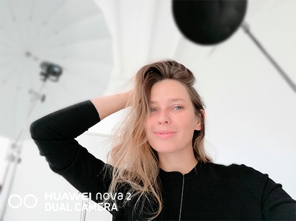

Снимите это немедленно!
Успешный fashion-фотограф и одна из первых девушек с камерой в Москве Лена Сарапульцева отвечает, почему no name фотографы – это новый тренд, какими функциями должен обладать ее смартфон и что она думает о новом Huawei nova 2, который несколько дней не выпускала из рук.

— Лена, по образованию ты психолог, и хотя фотограф, безусловно, тоже должен отлично понимать людей, что заставило тебя взяться за камеру?
Это не было спонтанным решением, я всегда хотела фотографировать и долго шла к этому. Например, работала в молодежном журнале, где придумывала fashion-съемки. Постепенно стало понятно, что работа с камерой и есть мой путь.
— Есть ли какая-то принципиальная разница между тем, как работает фотограф-мужчина и фотограф-женщина?
Когда я начинала, в Москве было не так много девушек-фотографов. Меня часто спрашивали, почему я выбрала «мужскую» профессию? Теперь такой вопрос кажется смешным, потому что я не уверена, что у женщин-фотографов вообще есть какая-то своя специфика. Единственное, порой модель, может стесняться мужчину, если концепция съемки довольно откровенная. В профессиональной сфере мы с таким почти не сталкиваемся.
— Как думаешь, кто они – Энни Лейбовиц, Питер Линдберг, Эллен фон Унверт нашего времени?
Путь каждого снимка с момента создания до зрителя стал очень коротким – жмешь на кнопку, и он тут же появляется в сети, попадает в ленты миллионов людей по всему миру и, если повезет, его замечают. Так что теперь вся власть у фотографов без громких имен. Мне могут быть интересны какие-нибудь молодые нью-йоркские ребята со свежим видением, страстью к своему делу, любители необычных ракурсов и смелых экспериментов. Я и не помню их всех по именам, но если ищу референсы, черпаю вдохновение именно в их работах. Где? Да хоть бы на Pinterest – там столько всего…

— Давай начистоту, в свой Instagram ты выкладываешь фото с телефона или загружаешь профессиональные снимки?
Конечно, я выкладываю свои профессиональные работы. Но селфи и ситуативные фото я обожаю делать на телефон! Тагие фотографии собирают много лайков, и пользователи Instagram интуитивно чувствуют, что их не обманывают. Эта Insta-picture действительно свежая, а не принесена из фотостудии неделю назад. И наконец, с телефона просто удобнее.
— В таком случае какие функции камеры в смартфоне для тебя важны?
Мне нравятся живые, искренние фото, сделанные здесь и сейчас, поэтому нужно, чтобы даже при искусственном или ночном освещении мои снимки получались хорошо. Не стану ведь я искать оборудование, чтобы сделать селфи на закате, правда? Еще люблю разные режимы и не стесняюсь ими пользоваться. Например, когда тестировала Huawei nova 2, оценила режим «Портрет» – он дает очень красивый эффект. Если вдобавок использовать функцию «Украшение», то и тон кожи станет ровнее без всякой ретуши. Прибегала к этой хитрости ранним утром, когда делала селфи по пути на работу. Для мужчин, кстати, автоматически настраиваются свои фильтры, и мальчики больше не выглядят в кадре неестественными. Еще этот смартфон умеет делать 3-D панорамы и широкоугольную съемку, что точно будет удобно в путешествиях.

— А чего еще не хватает?
Думаю, все идет к тому, что скоро мы будем снимать на смартфон, используя профессиональные объективы.
— Ты когда-нибудь делала снимки на телефон для журналов?
Была такая забавная история. Однажды я полетела на параплане с горы Бабадаг в Турции, имея под рукой цифровую камеру с матрицей 1.2Мп. О go pro тогда не было и речи. Я просто щелкала в полете с высоты 2000 метров. В итоге снимок опубликовали в журнале на 2/3 полосы. А теперь представьте, если бы у меня тогда был Huawei nova 2, у которого камера 20МП и еще множество спецэффектов! Думаю, и обложка могла бы получиться.
— Выходит, что на телефон можно снимок, по качеству неотличимый от снимка на профессиональную камеру?
Отвечу так: если мы говорим о небольшой картинке, которую снимали с естественным светом и с помощью хорошего объектива, то непрофессионалу будет довольно сложно понять, на камеру или на смартфон сделан кадр.

— Какими правилами ты руководствуешься, снимая на смартфон?
Теми же, которые актуальны и во время профессиональной съемки – нужно придерживаться своего вкуса, чувствовать свет и, главное, ловить момент!
— Лена, ты снимала на Huawei nova 2 на природе. Какие функции камеры помогли тебе добиться впечатляющей пейзажной съемки?
В съемках на открытом воздухе всегда полезна широкоугольная съемка, и она предусмотрена в камере смартфона как раз для таких случаев. Двойная основная камера совмещает в себе два мощных сенсора, которые работают вместе, создавая фотографии отличного качества. Объектив в Huawei nova 2 работает на разрешении 12МП, что более чем достойно для гаджета. Телеобъектив 8МП, в свою очередь, помогает при съемке удаленных объектов – например, если вдалеке вы увидели птицу или животное, то можно использовать его, чтобы не спугнуть объект при приближении. Кстати, при съемке с зумом один сенсор снимает, а другой распознает цвета и определяет яркость и четкость. Мне это показалось, хорошим решением для любителей.

— Иногда самое интересное происходит ночью, но остается только в нашей памяти. Как сделать так, чтобы сохранить эти моменты в снимках, особенно когда так рано темнеет?
Для этого в смартфонах и предусмотрены режимы ночной съемки. В Huawei nova 2 можно выбрать подсветку экрана на любой случай, чтобы создавать эффекты самого разного освещения. Отличное решение для тех, кто не любит задумываться о том, получится ли снимок в сумерках – получится и будет хорошо смотреться в соцсетях.
— Сейчас часто делают фотографии с эффектом размытого фона. Как такое получается?
Довольно сложно объяснить новичку, как работает этот прием. Весь секрет в числе диафрагме и особым образом выстроенном фокусном расстоянии. Если все сделать правильно, получится действительно красиво. Но для любителей есть отличная альтернатива – смартфон Huawei nova 2 делает такие снимки автоматически, эффект боке в него просто встроен. Нужно всего лишь нажать на кнопку, и готово! Рассчитано как раз на тех, кто хочет попасть в модные фототренды, публикуя снимки в своих соцсетях.

— Как думаешь, кому понравится Huawei nova 2?
Однозначно тем людям, которым нравится фотографировать on the go, то есть на ходу или даже на бегу. Встроенные фильтры позволяют делать красивые кадры с деликатной обработкой и сразу, без лишней траты времени на ретушь, постить фотографии в Instagram и любые другие соцсети.